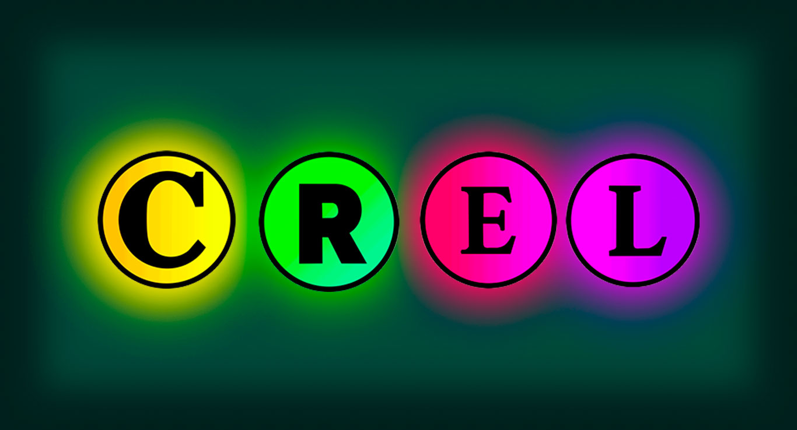
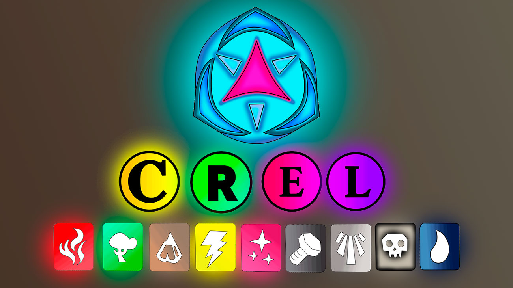
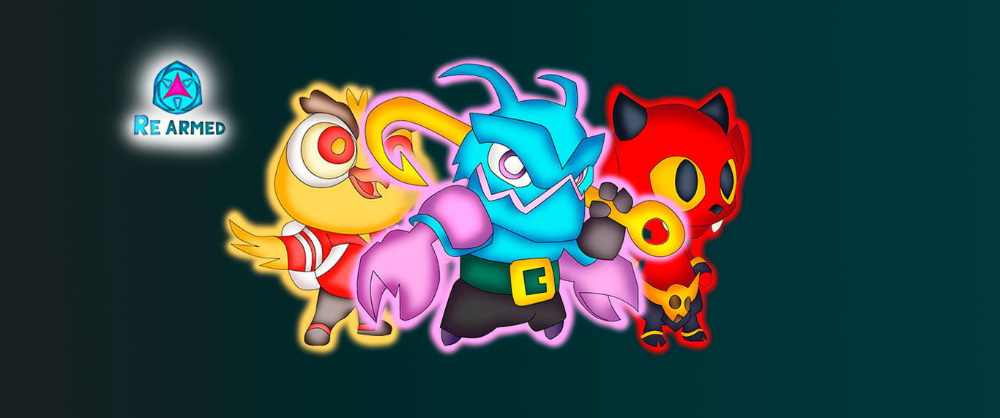

Our NFTs are composed in different points which can serve to identify our unique collection, here we will explain in detail what each one symbolizes, They are really easy to understand, giving a broad perspective and making it easy for the user to understand said NFT. We can take a look starting with the oddities.
Among the rarities we find, The common, rare, epic and legendary. Each one has a different meaning and power, thus giving your monster a unique strength. The common ones are usually the weakest but still they do not stop having a great design, the ones that follow are the rare monsters made for combat and long battles, The epics are fallen angels which were thrown from the Monsterlimpo by the strongest monsters , The legendary are those who managed to complete all the activities of gods thus achieving infinite power.
We cannot deny the different elements which each monster is classified, that makes them unique, its appearance varies between the element it has, since without more it is one of the most important characteristics and that you must take into account at the time of battle. . Currently there are (9 Elements), Fire, Nature, Earth, Magic, Metal, Light, Dark and water. The Mythic element is very strange and rare to obtain since only the legendary have it because they are the only ones capable and you have the strength to carry that power.
It should be mentioned that the monsters depending on their element can be in the habitads, since they need a special environment because they would die without it.
Its classification is very rare, which makes it easy to understand for all kinds of people. The Rearmed ecosystem, as its name indicates, was the creator of many ideas which resulted in this project. Monsters in their purest form are adults who are trained warriors. But like everyone they are born as babies. We call these types of Monsters "Minis" which are baby forms of monsters. Despite being small, they have the same capacity and strength as an adult, according to the Development Team's clarifications, they have much, much, much, more strength than adults. So it makes them unstoppable in combat.
They are very rare and exclusive. The main idea of them is to captivate the public with their sweetness, however, it is expected that soon in future seasons they can be seen on the official NFTs.
The real entertainment is with us, do not forget to go to the main home tab if you have doubts regarding the project, and if you want to know more about our monstrous topic, you can click and continue watching more.